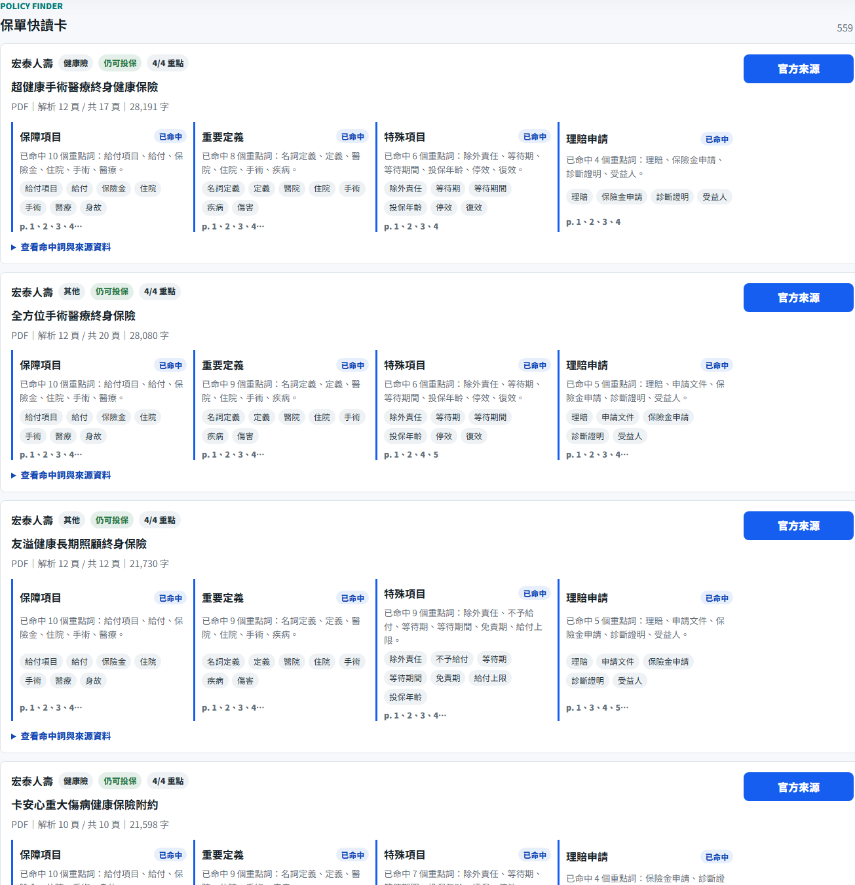
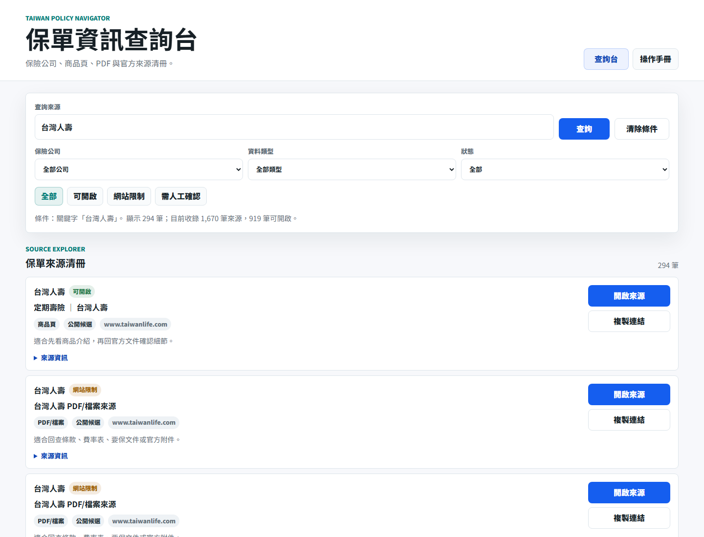
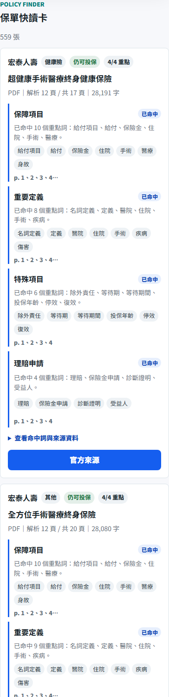
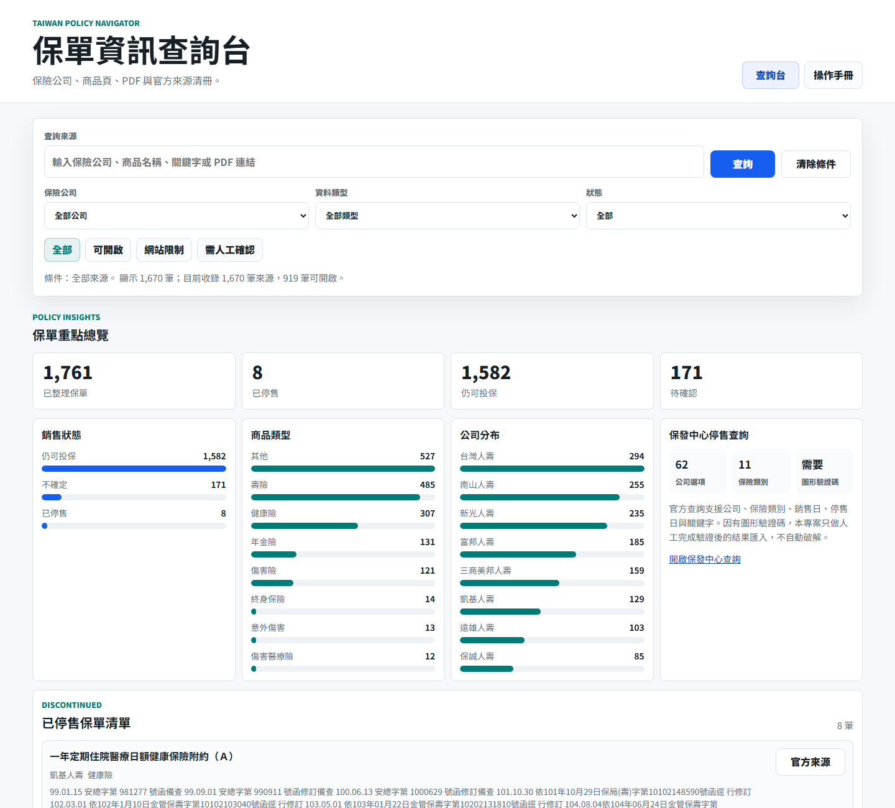
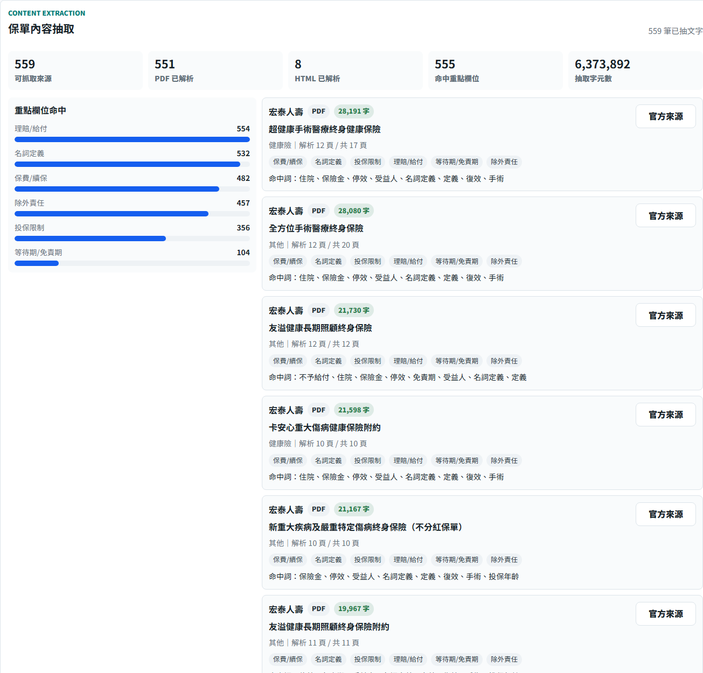
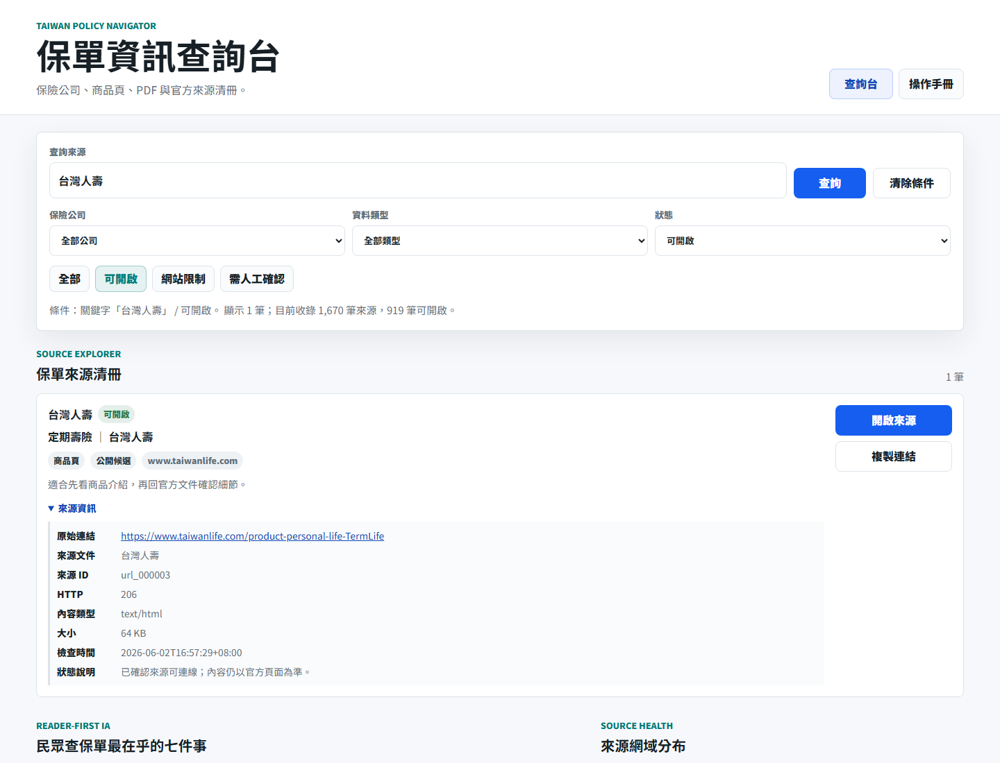
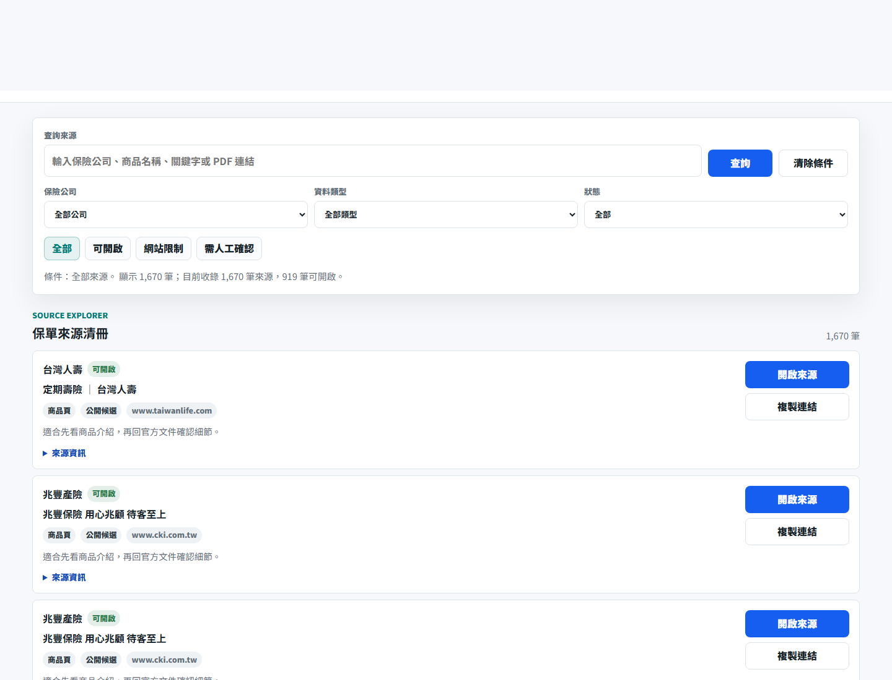
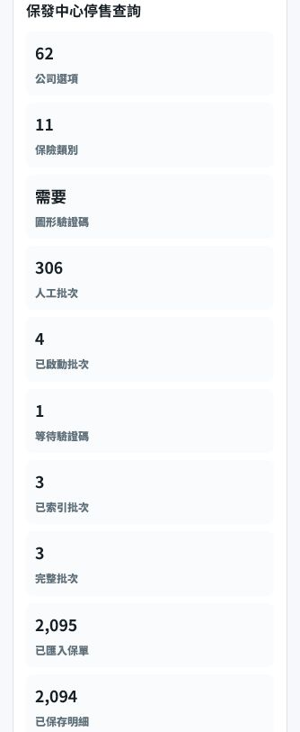

Start
1. 開始查詢
- 在首頁「查保單重點」輸入保險公司、商品名稱、住院、手術、除外責任、等待期等關鍵字。
- 按「查詢」或按 Enter，保單快讀卡會依目前條件更新。
- 按「清除條件」可回到完整資料集。


Filters
2. 用篩選縮小範圍
- 用「公司」篩出特定保險公司。
- 用「保單類型」切換壽險、健康險、傷害險、年金險等類型。
- 用「重點狀態」快速查看四項都有、有特殊項目、需回官方確認。

Insights
3. 看懂圖像化重點
- 先看「保單快讀卡」，每張卡固定呈現保障項目、重要定義、特殊項目、理賠申請。
- 再看「保單內容抽取」，確認系統已解析多少 PDF/HTML、文字量與欄位命中。
- 用「重點欄位命中」判斷哪些資料已碰到理賠/給付、名詞定義、除外責任、等待期、保費續保、投保限制。
- 在「抽取範例」按「官方來源」，可回到保險公司或官方網站核對原始文件。


Cards
4. 閱讀來源卡片
- 每張卡片代表一個官方來源 URL。
- 優先看公司、來源類型、抓取狀態與 HTTP 狀態。
- 按「開啟來源」可到原始網站確認文件內容。
- 按「複製連結」可分享官方來源給後續查核。

Status
5. 狀態說明
| 狀態 | 意義 | 建議動作 |
|---|---|---|
| 可開啟 | 網站允許讀取，且來源目前可取得。 | 可進一步查看或整理條款重點。 |
| 網站限制 | robots 規則不允許自動抓取。 | 保留網址，不做自動內容抽取。 |
| 需人工確認 | 來源逾時、錯誤、404 或格式待確認。 | 後續人工重新檢查。 |
| 人工驗證 | 保發中心停售查詢有圖形驗證碼。 | 用本機 operator 人工輸入驗證碼，再自動翻頁、抓明細並匯入。 |
Reader Questions
6. 一般民眾最常問的重點
- 這張保單哪些情況會理賠或給付？
- 重要名詞怎麼定義，例如疾病、傷害、住院、手術？
- 是否有等待期、免責期或不賠條件？
- 除外責任有哪些？
- 保費、續保、停效、解約或取消有哪些限制？
- 投保年齡、職業、健康告知或承保限制是什麼？
- 官方文件在哪裡，能不能回到原始來源確認？

Progress
7. 目前資料進度
批次分成兩種，不是只有 17 批。第一種是自動保單 URL 批次：policy-url-001 到 policy-url-017 已完成，共處理 1,343 個保單 URL。其中 559 個可讀取，532 個受 robots 規則限制，252 個錯誤或逾時。
內容抽取已完成所有 559 個可讀取來源，包含 551 筆 PDF 與 8 筆 HTML。系統共解析 6,373,892 個文字字元，555 筆來源命中至少一個民眾關心欄位。讀者快讀卡命中：保障項目 553 筆、重要定義 552 筆、特殊項目 529 筆、理賠申請 539 筆。
TII
8. 保發中心停售保單
第二種是保發中心 TII 人工驗證碼批次。保發中心查詢頁分為產險與壽險/人身險，網站目前已建立 108 個產險人工查詢批次與 198 個壽險/人身險人工查詢批次，合計 306 個人工批次。
目前 TII 執行狀態是已啟動 45 / 306 個人工批次，其中 1 個等待人工輸入驗證碼，44 / 306 個批次已索引、44 / 306 個批次完整完成、61,316 筆 TII 去重保單卡匯入，並已保存 61,112 / 61,316 份明細頁。已完成範圍是 tii-property-001 到 tii-property-044；最新完成的第 44 批 tii-property-044 是旺旺友聯意外保險，官方 3,621 列整理成 2,801 張保單卡，保留 820 筆官方重複 productId 列作覆核，明細頁 2,793 / 2,801 已保存，另有 8 份明細頁列入待補。前一批 tii-property-043 是旺旺友聯海上保險，官方 731 列整理成 731 張保單卡，明細頁 731 / 731 全部保存。全站目前共有 204 份官方明細頁待補。
本專案不破解驗證碼；下一批 tii-property-045 已準備好驗證碼。剩餘 262 個 TII 批次仍需用本機 operator 逐批人工輸入驗證碼後自動翻頁、抓明細並匯入。TII 停售卡片會先確認商品名稱、公司、險種、銷售日、停售日與 productId；若同公司同名但 productId 不同，卡片會顯示「同名版本時間軸」，協助把銷售日、停售日、保單代碼與官方明細分開判讀。
